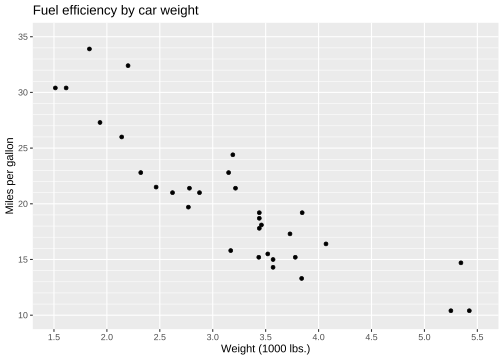
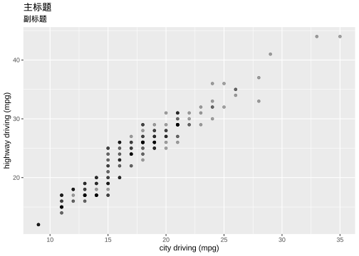
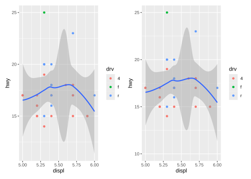

library(tidyverse)#> Warning: package 'purrr' was built under R version 4.5.2#> Warning: package 'stringr' was built under R version 4.5.2#> Warning: package 'forcats' was built under R version 4.5.2#> ── Attaching core tidyverse packages ──────────────────────── tidyverse 2.0.0 ──#> ✔ dplyr 1.1.4 ✔ readr 2.1.6#> ✔ forcats 1.0.1 ✔ stringr 1.6.0#> ✔ ggplot2 4.0.1 ✔ tibble 3.3.0#> ✔ lubridate 1.9.4 ✔ tidyr 1.3.1#> ✔ purrr 1.2.0 #> ── Conflicts ────────────────────────────────────────── tidyverse_conflicts() ──#> ✖ dplyr::filter() masks stats::filter()#> ✖ dplyr::lag() masks stats::lag()#> ℹ Use the conflicted package (<http://conflicted.r-lib.org/>) to force all conflicts to become errorslibrary(patchwork)#> Warning: package 'patchwork' was built under R version 4.5.2df<-tibble( index =1:26, pch =0:25, type =c(rep("hollow_color",15),rep("soild_color",6),rep("fill_color",5)), height =rep(c(1,2,3), times =c(15,6,5)),)
q<-ggplot(mpg, aes(displ, hwy))+geom_point()q+geom_smooth(method ="loess",span =0.2,se=T)# loess 平滑局部回归 small n#> `geom_smooth()` using formula = 'y ~ x'

Code
#span 0非常摆动，1不那么摆动q+geom_smooth(span =1)#不很摆动#> `geom_smooth()` using method = 'loess' and formula = 'y ~ x'
Code
library(MASS)#> #> Attaching package: 'MASS'#> #> The following object is masked from 'package:patchwork':#> #> area#> #> The following object is masked from 'package:dplyr':#> #> selectq+geom_smooth(method ="rlm")# robust linear model 稳健线性模型#> `geom_smooth()` using formula = 'y ~ x'
Code
library(mgcv)#> Warning: package 'mgcv' was built under R version 4.5.2#> Loading required package: nlme#> #> Attaching package: 'nlme'#> #> The following object is masked from 'package:dplyr':#> #> collapse#> #> This is mgcv 1.9-4. For overview type '?mgcv'.q+geom_smooth(method ="gam", formula =y~s(x))# gam 广义相加模型 n>1000
Code
binomial_smooth<-function(...){geom_smooth(method ="glm", method.args =list(family ="binomial"), ...)}ggplot(rpart::kyphosis,aes(Age,as.numeric(Kyphosis)-1))+geom_point()+binomial_smooth()#> `geom_smooth()` using formula = 'y ~ x'
smaller<-diamonds|>dplyr::filter(carat<3)ggplot(smaller, aes(x =carat, y =price))+geom_bin2d()#> `stat_bin2d()` using `bins = 30`. Pick better value `binwidth`.
Code
# install.packages("hexbin")ggplot(smaller, aes(x =carat, y =price))+geom_hex()
read_csv("data/g.csv")|>summarise( mean=mean(liverweight), sd=sd(liverweight), .by=treatment)|>ggplot(aes(treatment,mean,fill=treatment))+geom_bar(stat ="identity")+geom_errorbar(aes(ymin=mean-sd,ymax=mean+sd),width=.2)#> Rows: 20 Columns: 2#> ── Column specification ────────────────────────────────────────────────────────#> Delimiter: ","#> chr (1): treatment#> dbl (1): liverweight#> #> ℹ Use `spec()` to retrieve the full column specification for this data.#> ℹ Specify the column types or set `show_col_types = FALSE` to quiet this message.
1.3.2.3 geom_dotplot
Code
ggplot(mpg)+geom_dotplot(mapping =aes(x=drv,y=hwy), position ="identity", stackdir ="center",binaxis ='y',# stacking along y axis fill="red",binwidth =0.7)
1.3.2.4 geom_boxplot
Code
ggplot(mpg)+geom_boxplot(mapping =aes(x=drv,y=hwy), stat ="boxplot",position ="dodge", notch=TRUE, varwidth=TRUE, width=0.1,fill="green")+geom_violin(aes(x=drv,y=hwy),alpha=0.2)
1.3.2.5 geom_violin
Code
ggplot(mpg)+geom_violin(mapping =aes(x=drv,y=hwy), stat ="ydensity",position ="dodge")
ggplot(mpg, aes(x =drv, fill =class))+geom_bar(alpha =1/5, position ="identity")|ggplot(mpg, aes(x =drv, color =class))+geom_bar(fill =NA, position ="identity")
ggplot(mpg, aes(x =displ, y =hwy))+geom_point(aes(color =drv))+geom_smooth()|ggplot(mpg, aes(x =displ, y =hwy))+geom_point(aes(color =drv))+geom_smooth()+coord_cartesian(xlim =c(5, 6), ylim =c(10, 25))#放大局部#> `geom_smooth()` using method = 'loess' and formula = 'y ~ x'#> `geom_smooth()` using method = 'loess' and formula = 'y ~ x'
ggplot(cars, aes(x =speed, y =dist))+geom_col()+geom_smooth(data =cars, aes(x =speed, y =dist*2))+scale_y_continuous(sec.axis =sec_axis(trans =~.*2, name ="Z-axis title"))#> Warning: The `trans` argument of `sec_axis()` is deprecated as of ggplot2 3.5.0.#> ℹ Please use the `transform` argument instead.#> `geom_smooth()` using method = 'loess' and formula = 'y ~ x'

Code
# 次轴 breaksggplot(cars, aes(x =speed, y =dist))+geom_col()+geom_smooth(data =cars, aes(x =speed, y =dist*2))+scale_y_continuous(sec.axis =sec_axis(~.*2, name ="Z-axis title", breaks =c(100, 200, 300)))#> `geom_smooth()` using method = 'loess' and formula = 'y ~ x'
Code
# 次轴 labelsggplot(cars, aes(x =speed, y =dist))+geom_col()+geom_smooth(data =cars, aes(x =speed, y =dist*2))+scale_y_continuous(sec.axis =sec_axis(~.*2, name ="Z-axis title", breaks =c(100, 200, 300), labels =c("A", "B", "C")))#> `geom_smooth()` using method = 'loess' and formula = 'y ~ x'
Code
ggplot(cars, aes(x =speed, y =dist))+geom_col()+geom_smooth(data =cars, aes(x =speed, y =dist*2))+scale_y_continuous(sec.axis =sec_axis(~.*2, name ="Z-axis title"))+theme(axis.title.y.right =element_text(color ="red", size =15, face ="bold"), axis.text.y.right =element_text(color ="blue", size =10), axis.line.y.right =element_line(color ="orange"))#> `geom_smooth()` using method = 'loess' and formula = 'y ~ x'
ggplot(mpg, aes(x =displ, y =hwy))+geom_point(aes(color =class))+geom_smooth(se =FALSE)+labs( title ="Fuel efficiency generally decreases with engine size", subtitle ="Two seaters (sports cars) are an exception because of their light weight", caption ="Data from fueleconomy.gov", tag ="Fig. 1", x ="Engine displacement (L)", y ="Highway fuel economy (mpg)", color ="Car type", # 图例 美学映射color)+theme(plot.title.position ="plot",# 相对于整个绘图进行设置 plot.caption.position ="plot", plot.tag.position ="topleft", plot.caption =element_text(hjust =0))#> `geom_smooth()` using method = 'loess' and formula = 'y ~ x'
Code
ggplot(economics, aes(date, unemploy))+geom_area(fill =rgb(0, 0.5, 1, alpha =0.5))+labs(title ="Title of the plot", subtitle ="Subtitle of the plot", caption ="This is the caption", tag ="Fig. 1")+theme(plot.title =element_text(family ="serif", # Font family face ="bold", # Font face color =4, # Font color size =15, # Font size hjust =1, # Horizontal adjustment vjust =1, # Vertical adjustment angle =-10, # Font angle lineheight =1, # Line spacing margin =margin(20, 0, 0, 0)), # Margins (t, r, b, l) plot.subtitle =element_text(hjust =0), # Subtitle customization plot.caption =element_text(hjust =0.25), # Caption customization plot.tag =element_text(face ="italic"), # Tag customization plot.title.position ="plot", # Title and subtitle position ("plot" or "panel") plot.caption.position ="panel", # Caption position ("plot" or "panel") plot.tag.position ="top")# Tag position
1.9.2 Legend merging and splitting
1.9.3 文本注释 text
Code
# 字体 样式df<-data.frame(x =1:3, y =1:3, family =c("sans", "serif", "mono"), face =c("plain", "bold", "italic"))ggplot(df, aes(x, y))+geom_text(mapping =aes(label =paste0(family,": ",face), family =family, fontface =face), vjust ="inward", hjust ="inward")

Code
# 位置df<-data.frame( x =c(1, 1, 2, 2, 1.5), y =c(1, 2, 1, 2, 1.5), text =c("bottom-left", "top-left", "bottom-right", "top-right", "center"))ggplot(df, aes(x, y))+geom_text(aes(label =text), vjust ="inward", hjust ="inward")
p+ggrepel::geom_label_repel( data =label_info, aes(x =displ, y =hwy, label =drive_type), fontface ="bold", size =5, nudge_y =2)
Code
potential_outliers<-mpg|>dplyr::filter(hwy>40|(hwy>20&displ>5))ggplot(mpg, aes(x =displ, y =hwy))+geom_point()+ggrepel::geom_text_repel(data =potential_outliers, aes(label =model))+geom_point(data =potential_outliers, color ="red")+geom_point( data =potential_outliers, color ="red", size =3, shape ="circle open")
1.9.4 参考线：线段 直线 箭头
geom_hline()
geom_vline()
geom_abline
geom_segment() arrow
Code
trend_text<-"Larger engine sizes tend to have lower fuel economy."|>str_wrap(width =30)trend_text#> [1] "Larger engine sizes tend to\nhave lower fuel economy."ggplot(mpg, aes(x =displ, y =hwy))+geom_point()+annotate( geom ="label", x =3.5, y =38, label =trend_text, hjust ="left", color ="red")+annotate( geom ="segment", x =3, y =35, xend =5, yend =25, color ="red", arrow =arrow(type ="closed"))
Code
p<-ggplot(mpg, aes(displ, hwy))+geom_point( data =dplyr::filter(mpg, manufacturer=="subaru"), colour ="orange", size =3)+geom_point()p|p+annotate(geom ="point", x =5.5, y =40, colour ="orange", size =3)+annotate(geom ="point", x =5.5, y =40)+annotate(geom ="text", x =5.6, y =40, label ="subaru", hjust ="left")|p+annotate( geom ="curve", x =4, y =35, xend =2.65, yend =27, curvature =.3, arrow =arrow(length =unit(2, "mm")))+annotate(geom ="text", x =4.1, y =35, label ="subaru", hjust ="left")
1.9.5 富文本/markdown
Code
df<-data.frame(x =1:3, y =1:3)base<-ggplot(df, aes(x, y))+geom_point()+labs(x ="Axis title with *italics* and **bold**")library(ggtext)base|base+geom_richtext(aes(x =2, y =3, label ="**title** of <span style = 'color:red'>xy</span>"), angle =-25)+theme(axis.title.x =ggtext::element_markdown())#> Warning in geom_richtext(aes(x = 2, y = 3, label = "**title** of <span style = 'color:red'>xy</span>"), : All aesthetics have length 1, but the data has 3 rows.#> ℹ Please consider using `annotate()` or provide this layer with data containing#> a single row.
library(ggplot2)base<-ggplot()+stat_function(fun =dnorm, geom ="density", xlim =c(-4, 4), fill =rgb(0, 0, 1, 0.1))base+theme( plot.background =element_rect( colour ="red", fill ="lightblue",# 默认 fill = NA linewidth =2,), plot.margin =margin( t =2,# Top margin r =2,# Right margin b =2,# Bottom margin l =2)# Left margin)+theme( panel.background =element_rect(fill ="lightyellow"), panel.grid.major.y =element_line(color ="green", linewidth =0.8), panel.grid.major.x =element_line(color ="purple", linewidth =0.8))
df<-data.frame(x =1:4, y =1:4, z =rep(c("a", "b"), each =2))base<-ggplot(df, aes(x, y, colour =z))+geom_point()base+theme( legend.background =element_rect( fill ="lemonchiffon", colour ="grey50", linewidth =1))
findfont<-function(x){suppressMessages(require(showtext))suppressMessages(require(dplyr))dplyr::filter(font_files(), grepl(x, family, ignore.case=TRUE))|>dplyr::select(path, file, family, face)}findfont("comic")#> path file family face#> 1 C:/Windows/Fonts comic.ttf Comic Sans MS Regular#> 2 C:/Windows/Fonts comicbd.ttf Comic Sans MS Bold#> 3 C:/Windows/Fonts comici.ttf Comic Sans MS Italic#> 4 C:/Windows/Fonts comicz.ttf Comic Sans MS Bold Italicfont_add(family ="Times New Roman", regular ="C:\\Windows\\Fonts\\Times New Roman\\times.ttf", bold ="C:\\Windows\\Fonts\\Times New Roman\\timesbd.ttf", italic ="C:\\Windows\\Fonts\\Times New Roman\\timesi.ttf", bolditalic ="C:\\Windows\\Fonts\\Times New Roman\\timesbi.ttf")findfont("Times New Roman")#> path file family face#> 1 C:/Windows/Fonts times.ttf Times New Roman Regular#> 2 C:/Windows/Fonts timesbd.ttf Times New Roman Bold#> 3 C:/Windows/Fonts timesbi.ttf Times New Roman Bold Italic#> 4 C:/Windows/Fonts timesi.ttf Times New Roman Italicfont_families()#> [1] "sans" "serif" "mono" "wqy-microhei" #> [5] "Times New Roman"
Code
ggplot(mpg, aes(x =displ, y =hwy, color =drv))+geom_point()+labs( title ="Larger engine sizes tend to have lower fuel economy", caption ="Source: https://fueleconomy.gov.")+theme( legend.position =c(0.8, 0.9), legend.direction ="horizontal", legend.box.background =element_rect(color ="blue"), plot.title =element_text(face ="bold",hjust =0.5), plot.title.position ="plot", plot.caption.position ="plot", plot.caption =element_text(hjust =1))